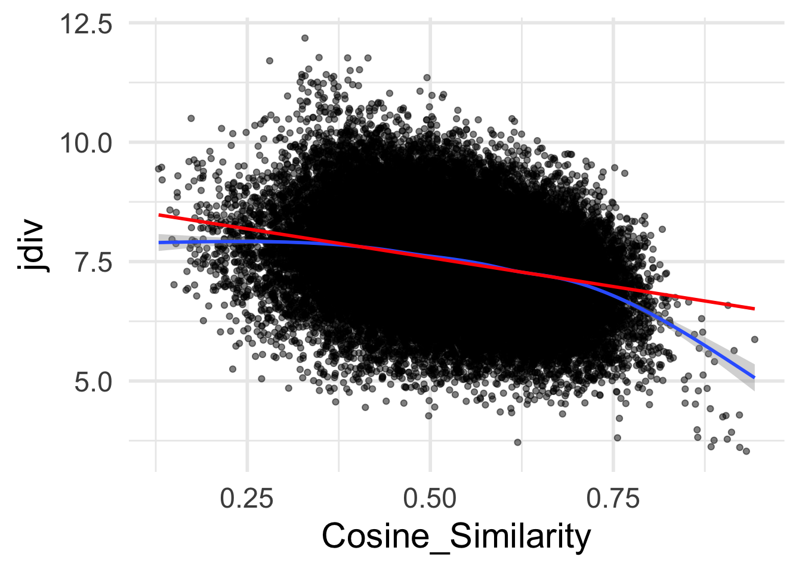

Code
library(dplyr)
library(readr)
library(purrr)
library(ggplot2)Expactations in context vs. static cosine similarity
library(dplyr)
library(readr)
library(purrr)
library(ggplot2)if (!file.exists('../temp/df_pair_300_6060-simple.csv')){
read_csv('../temp/df_pair_300_6060.csv') %>%
rowwise() %>%
mutate(kl_divergence_Sents2_to_Sents1 = list(reticulate::py_eval(kl_divergence_Sents2_to_Sents1)),
kl_divergence_Sents1_to_Sents2 = list(reticulate::py_eval(kl_divergence_Sents1_to_Sents2))
) %>%
mutate(jdiv = mean((pluck(kl_divergence_Sents2_to_Sents1) + pluck(kl_divergence_Sents1_to_Sents2)) / 2)) %>%
select(Form1, Form2, jdiv, Cosine_Similarity) %>%
unique() %>%
write_csv('../temp/df_pair_300_6060-simple.csv')
}
df <- read_csv('../temp/df_pair_300_6060-simple.csv')
#df[!duplicated(t(apply(df[1:2], 1, sort))), ]stats_jd <- df %>% summarize(mean = mean(jdiv),
n = n(),
median = median(jdiv),
max = max(jdiv),
min = min(jdiv)
)
print(stats_jd)# A tibble: 1 × 5
mean n median max min
<dbl> <int> <dbl> <dbl> <dbl>
1 7.51 44552 7.48 12.2 3.53Some examples of pairs around these values
df %>% filter(jdiv > stats_jd$mean) %>% arrange() %>% slice_head(n = 5)# A tibble: 5 × 4
Form1 Form2 jdiv Cosine_Similarity
<chr> <chr> <dbl> <dbl>
1 spring land 7.70 0.360
2 spring well 7.74 0.678
3 well land 8.04 0.443
4 well water 7.79 0.685
5 air well 7.88 0.678Top and bottom values:
df %>% arrange(desc(jdiv)) %>% slice_head(n = 5) %>%
rbind(df %>% arrange(jdiv) %>% slice_head(n = 5))# A tibble: 10 × 4
Form1 Form2 jdiv Cosine_Similarity
<chr> <chr> <dbl> <dbl>
1 prevent south 12.2 0.329
2 president prevent 11.8 0.348
3 know south 11.8 0.387
4 prevent I 11.8 0.415
5 damage south 11.7 0.281
6 six seven 3.53 0.932
7 five six 3.61 0.923
8 six three 3.62 0.884
9 or and 3.72 0.619
10 six four 3.76 0.888stats_cs <- df %>% summarize(mean = mean(Cosine_Similarity),
n = n(),
median = median(Cosine_Similarity),
max = max(Cosine_Similarity),
min = min(Cosine_Similarity)
)
print(stats_cs)# A tibble: 1 × 5
mean n median max min
<dbl> <int> <dbl> <dbl> <dbl>
1 0.531 44552 0.533 0.943 0.129Some examples of pairs around these values
df %>% filter(Cosine_Similarity > stats_cs$mean) %>% arrange() %>% slice_head(n = 5)# A tibble: 5 × 4
Form1 Form2 jdiv Cosine_Similarity
<chr> <chr> <dbl> <dbl>
1 water land 7.01 0.565
2 spring water 6.72 0.657
3 spring well 7.74 0.678
4 well water 7.79 0.685
5 light water 6.37 0.717Top and bottom values:
df %>% arrange(desc(Cosine_Similarity)) %>% slice_head(n = 5) %>%
rbind(df %>% arrange(Cosine_Similarity) %>% slice_head(n = 5))# A tibble: 10 × 4
Form1 Form2 jdiv Cosine_Similarity
<chr> <chr> <dbl> <dbl>
1 north south 5.87 0.943
2 six seven 3.53 0.932
3 five six 3.61 0.923
4 two three 4.29 0.922
5 winter summer 5.64 0.915
6 if school 9.44 0.129
7 city if 9.47 0.133
8 disease if 9.21 0.134
9 if season 8.58 0.144
10 if oil 7.96 0.147df %>%
ggplot(aes(x = Cosine_Similarity,
y = jdiv)) +
geom_point(alpha = 0.5) +
theme_minimal(base_size = 22) +
geom_smooth() +
geom_smooth(method = 'lm', col = 'red')`geom_smooth()` using method = 'gam' and formula 'y ~ s(x, bs = "cs")'`geom_smooth()` using formula 'y ~ x'
Pearson correlation
df %>% select(jdiv, Cosine_Similarity) %>% cor(method='pearson') %>% pluck(2)[1] -0.2806668Spearman correlation
df %>% select(jdiv, Cosine_Similarity) %>% cor(method='spearman') %>% pluck(2)[1] -0.2675066Regression: confusability ~ cosine
summary(lm(jdiv ~ Cosine_Similarity, data = df))
Call:
lm(formula = jdiv ~ Cosine_Similarity, data = df)
Residuals:
Min 1Q Median 3Q Max
-3.5776 -0.5769 -0.0137 0.5777 4.1856
Coefficients:
Estimate Std. Error t value Pr(>|t|)
(Intercept) 8.78866 0.02120 414.57 <2e-16 ***
Cosine_Similarity -2.41535 0.03913 -61.72 <2e-16 ***
---
Signif. codes: 0 '***' 0.001 '**' 0.01 '*' 0.05 '.' 0.1 ' ' 1
Residual standard error: 0.899 on 44550 degrees of freedom
Multiple R-squared: 0.07877, Adjusted R-squared: 0.07875
F-statistic: 3809 on 1 and 44550 DF, p-value: < 2.2e-16Regression: cosine ~ confusability
summary(lm(Cosine_Similarity ~ jdiv, data = df))
Call:
lm(formula = Cosine_Similarity ~ jdiv, data = df)
Residuals:
Min 1Q Median 3Q Max
-0.39680 -0.07078 0.00307 0.07505 0.35907
Coefficients:
Estimate Std. Error t value Pr(>|t|)
(Intercept) 0.7755055 0.0039975 194.00 <2e-16 ***
jdiv -0.0326139 0.0005284 -61.72 <2e-16 ***
---
Signif. codes: 0 '***' 0.001 '**' 0.01 '*' 0.05 '.' 0.1 ' ' 1
Residual standard error: 0.1045 on 44550 degrees of freedom
Multiple R-squared: 0.07877, Adjusted R-squared: 0.07875
F-statistic: 3809 on 1 and 44550 DF, p-value: < 2.2e-16Most “misaligned” pairs in terms of confusability vs. cosine_sim
df %>% mutate(jrank = rank(jdiv),
crank = rank(-Cosine_Similarity)) %>%
mutate(rank_diff = abs(jrank - crank)) %>%
arrange(desc(rank_diff)) %>%
head(n = 20)# A tibble: 20 × 7
Form1 Form2 jdiv Cosine_Similarity jrank crank rank_diff
<chr> <chr> <dbl> <dbl> <dbl> <dbl> <dbl>
1 ship enter 5.25 0.230 386 44391 44005
2 return ship 5.05 0.270 174 44132 43958
3 because before 4.85 0.307 95 43644 43549
4 make enter 5.52 0.261 790 44190 43400
5 hold enter 5.56 0.271 889 44120 43231
6 enter eat 5.49 0.289 738 43913 43175
7 call enter 5.52 0.286 787 43954 43167
8 collect hold 5.07 0.326 193 43223 43030
9 understand enter 5.73 0.234 1358 44361 43003
10 try enter 5.24 0.322 375 43320 42945
11 know cloud 9.47 0.752 43529 597 42932
12 look cloud 9.35 0.766 43242 361 42881
13 tell enter 5.56 0.299 912 43778 42866
14 if before 5.53 0.307 825 43628 42803
15 because now 5.79 0.239 1539 44335 42796
16 plant door 5.18 0.332 311 43035 42724
17 pay enter 5.79 0.257 1546 44216 42670
18 share enter 5.45 0.322 668 43314 42646
19 begin hold 5.01 0.341 150 42787 42637
20 because sometimes 5.71 0.297 1294 43810 42516Least “misaligned pairs”
df %>% mutate(jrank = rank(jdiv),
crank = rank(-Cosine_Similarity)) %>%
mutate(rank_diff = abs(jrank - crank)) %>%
arrange(desc(rank_diff)) %>%
tail(n = 20)# A tibble: 20 × 7
Form1 Form2 jdiv Cosine_Similarity jrank crank rank_diff
<chr> <chr> <dbl> <dbl> <dbl> <dbl> <dbl>
1 four five 4.28 0.904 14 9 5
2 six two 4.42 0.882 19 14 5
3 here president 8.74 0.384 40406 40411 5
4 mind true 5.93 0.709 2045 2041 4
5 difficult north 9.29 0.331 43086 43082 4
6 head dog 6.60 0.645 6934 6931 3
7 seven five 3.93 0.911 9 6 3
8 hot night 6.32 0.674 4292 4289 3
9 clear hot 6.13 0.691 3064 3061 3
10 damage time 8.19 0.444 34741 34738 3
11 three four 4.25 0.899 12 10 2
12 five three 3.78 0.906 6 8 2
13 month year 4.52 0.862 26 24 2
14 think west 9.34 0.326 43211 43209 2
15 language get 8.06 0.460 32796 32794 2
16 war part 8.94 0.365 41644 41642 2
17 five six 3.61 0.923 2 3 1
18 six seven 3.53 0.932 1 2 1
19 know think 4.54 0.848 30 29 1
20 no gold 8.19 0.444 34790 34789 1These two measures seem quite different so far. They appear to align in terms of what is the least confusable and most distributionally similar, however: numbers, days of the week, and so on. But they differ quite a bit in the middle values (as shown by the plot) + on some elements at their respective extremes (e.g., confusability seems to consider words of the same POS –return vs. ship or because vs. before–to be similarly confusable whereas cosine similarity does not)